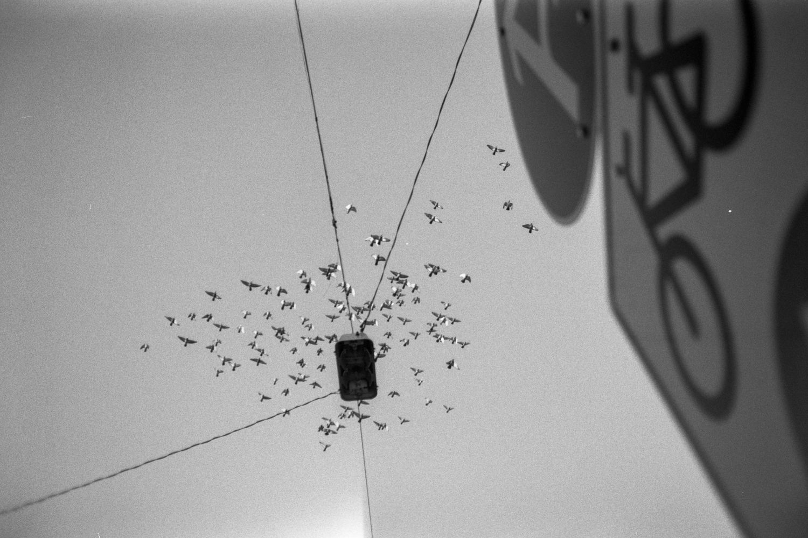

Kino filmet fűztem a 40 éves Prakticába

Öcsém még szeptemberben meglepett egy különös ajándékkal: egy 250-es érzékenységű, finomszemcsés, pánkromatikus, fekete-fehér, 35 mm-es mozi-nyersanyaggal. A fajta, amit már nem nagyon látni a boltokban, és amit illik megbecsülni, nem csak elhasználni. Az elmúlt években eladtam a legtöbb analóg gépemet, és valahogy a film is kikopott a kezeim közül. A digitális kényelme alatt elnémult az a fajta várakozás, amit régen minden kocka jelentett. Maradt ugyan néhány kis kompakt a fiók mélyén, de ezt a filmet valami méltóval szerettem volna megetetni.
4 perces olvasmány · 2024. december 30.